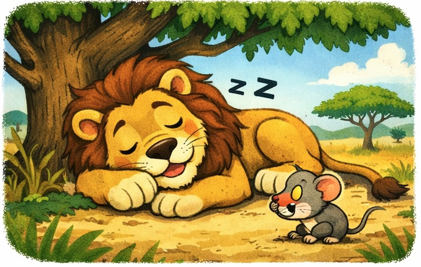
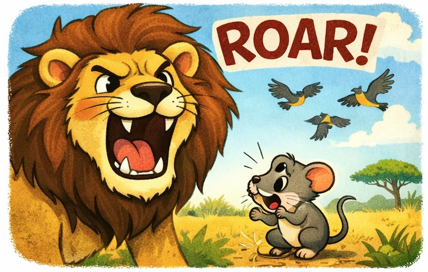
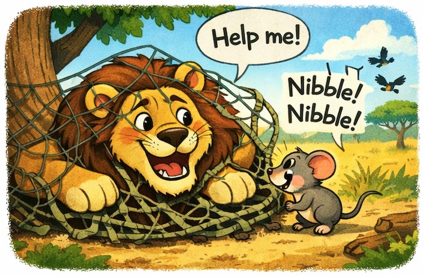
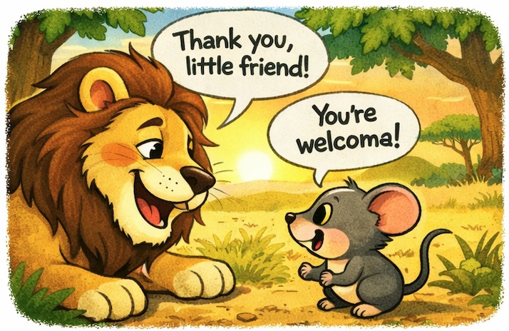

The Lion and the Mouse
Once upon a time, in a big golden grassland, lived a mighty lion.
He was the strongest animal. Everyone was afraid of him.
One afternoon, the lion was sleeping under a shady tree.
Snore… snore… snore.

A tiny mouse ran through the grass.
Bump! He landed right on the lion’s nose!
The lion opened his eyes.

ROAR! The sound was so loud that birds flew away!
“Who woke me up?” growled the lion.
The little mouse shook all over.
“I’m sorry! Please let me go!” squeaked the mouse.
“If you let me go, one day I will help you!”
The lion laughed. “You? Help me? Ha ha! You are so small!”
But he was kind. He lifted his paw and let the mouse run away.
Days passed.
One morning, the lion walked through the forest.
SNAP! A big net fell on him. Hunters had set a trap!
The lion pulled and roared, but the ropes were too strong.
The little mouse heard the roar. He ran to the lion.

“Don’t worry, Lion! I will help you!” squeaked the mouse.
Nibble, nibble, nibble.
The mouse chewed the ropes.
SNAP! The net broke apart!
The lion stepped out. He took a deep breath.
“You saved me,” said the lion. “I am sorry I laughed at you.”
The mouse smiled. “You were kind to me. I kept my promise.”
From that day, the lion and the mouse were best friends.

🌟 Moral of the Story:
Even the smallest friend can make the biggest difference. Always be kind — you never know who will help you one day.